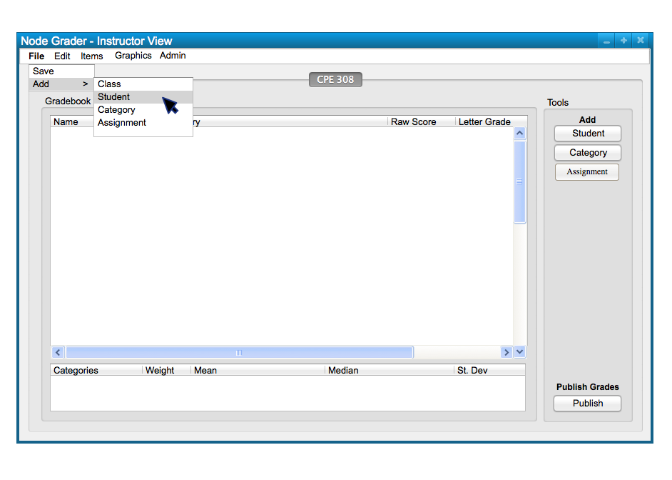
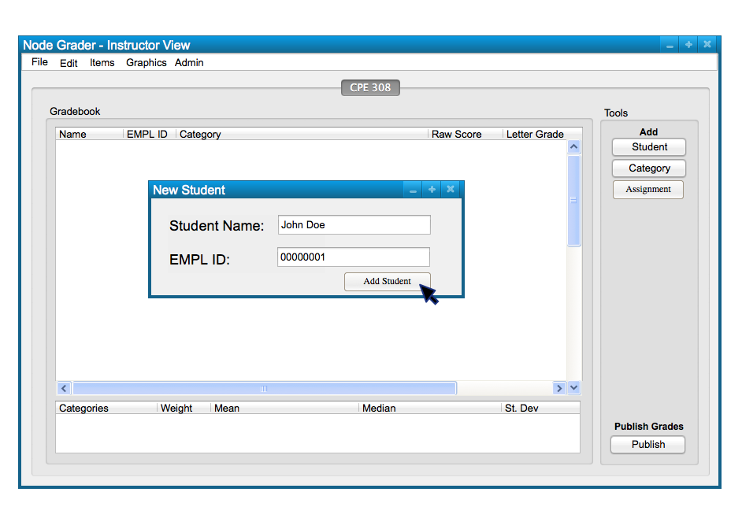
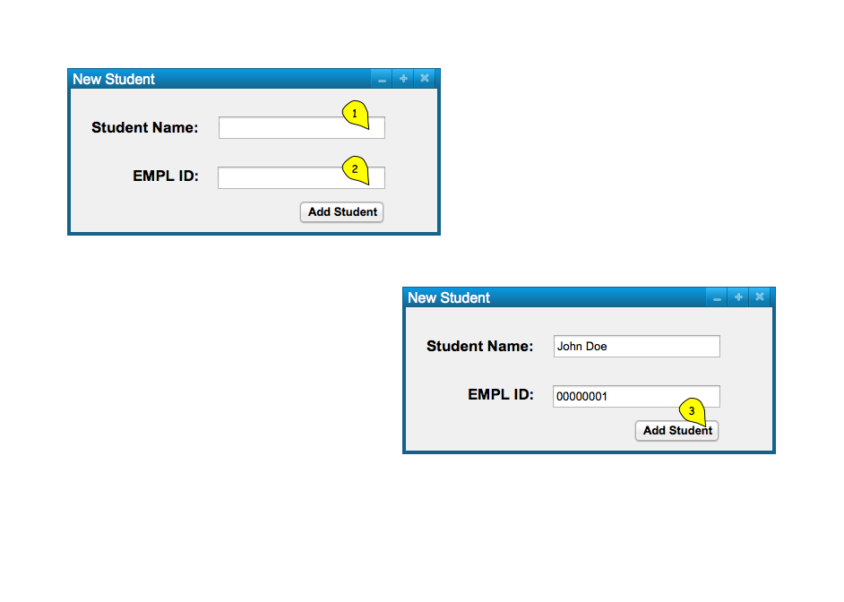
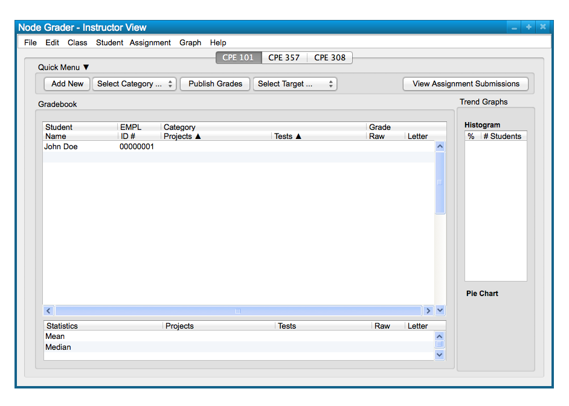
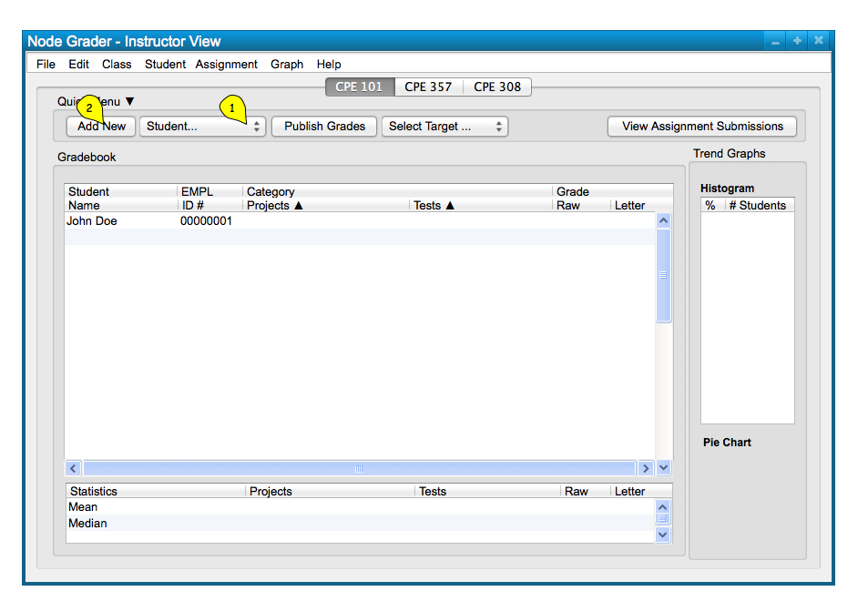
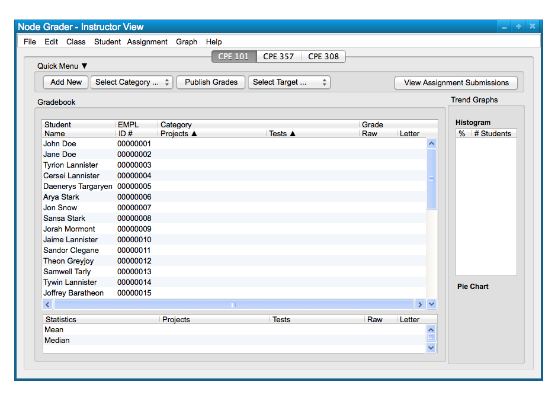

In this scenario, we take a look at how a user adds students to a class spreadsheet
manually, via the 'Student' menu and the Quick Menu commands. Manually adding students
is useful for adding an entire class roster to a spreadsheet individually, or adding students that
add or crash the course after the initial enrollment period. Below, in Figure 1,
is a blank class speadsheet that is ready for a user to start manually adding the students.

Figure 1: Empty Class Spreadsheet.
To manually add a new student to a spreadsheet, the user chooses the 'Student' menu
command. A list of options appears and the user chooses 'New Student' to
add a new row of student data; this takes the form of the following, Figure 2.

Figure 2: Add Student path.
The dialog response to the user's selection of the 'Student New Student' command only takes in a student name
and EMPLY ID in the two text boxes, and is confirmed with the 'Add Student' button below. Figure 3 shows the response dialog.

Figure 3: Add Student dialog.
Confirming the student creates a new row of student data in the spreadsheet that is to be filled in, as appropriate, with student grades and other data that the user may adds (see Add Category section).
Upon selecting the 'Add Student' button, the system
displays the spreadsheet in Figure 4, with the new student added.

Figure 4: Student Added view.
New students are sorted in the order they are added, and can sorted alphabetically by
last name for easy organization and integration with school grade systems by clicking on the
student names tab. Students can also be sorted alphabetically by the groups they are assigned to, if applicable.
Students can be added individually as well as by importing a roster from the
'Admin' menu (see Export Students section)
The Quick Menu, located above the spreadsheet, is another way the user adds students manually. To do this,
a user selects 'Student' in the selcection tab and clicks the 'Add New' button next to
it. This is displayed in Figure 5 below.

Figure 5: Add Student via Quick Menu.
The dialog appears again for a user to add another new student, as shown in Figure 6.
Figure 6: Adding another Student dialog.
And again, the new student is added to the spreadsheet, displayed in Figure 7.
Figure 7: Second Studnet Added.
Repeating these functions for manually adding students, a user is capable of adding a whole class. A sample class is shown
below in Figure 8.

Figure 8: Sample Class From Manually Additions.